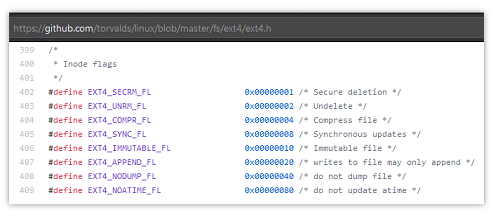

Un arxiu de Linux té una sèrie d'atributs que es poden activar o desactivar amb la comanda chattr.
Els atributs que té activats/desactivats un arxiu es guarden amb una estructura anomenada bit-field:
Els atributs que pot tenir un arxiu, i les seves puntuacions, són:
+-------------------+-----------+---------------------------------+
| Nom | Puntuació | Descripció |
+-------------------+-----------+---------------------------------+
| EXT4_SECRM_FL | 1 | Secure deletion |
| EXT4_UNRM_FL | 2 | Undelete |
| EXT4_COMPR_FL | 4 | Compress file |
| EXT4_SYNC_FL | 8 | Synchronous updates |
| EXT4_IMMUTABLE_FL | 16 | Immutable file |
| EXT4_APPEND_FL | 32 | writes to file may only append |
| EXT4_NODUMP_FL | 64 | do not dump file |
| EXT4_NOATIME_FL | 128 | do not update atime |
+-------------------+-----------+---------------------------------+
Per exemple: si un arixu té activats els atributs EXT4_UNRM_FL i EXT4_APPEND_FL, el seu bit-field serà 34, que és la suma de la puntuació 2 de EXT4_UNRM_FL més la puntuació 32 de EXT4_APPEND_FL.
Escriu un programa que a partir del bit-field d'un fitxer imprimeixi els atributs que té activats.
Input Format
Un número enter que representa el bit-field d'un arxiu.
Constraints
-
Output Format
S'imprimirà el Nom dels atributs que té activats el fitxer en ordre de major a menor puntuació:
EXT4_NOATIME_FL
EXT4_NODUMP_FL
EXT4_APPEND_FL
EXT4_IMMUTABLE_FL
EXT4_SYNC_FL
EXT4_COMPR_FL
EXT4_UNRM_FL
EXT4_SECRM_FL
Suggerència per a la solució
Un possible solució al problema consisteix en tractar de restar al bit-field la puntuació de cada atribut (de més puntuació a menys).
Si es pot restar sense que quedi un número negatiu, aleshores és que té aquell atribut activat.
Per exemple: suposem que el bit-field es 34:
EXT4_APPEND_FL. Restem 32 i queda 2EXT4_UNRM_FL. Restem 2 i queda 0Sample Input 0
10
Sample Output 0
EXT4_SYNC_FL
EXT4_UNRM_FL
Explanation 0
10 = 8 + 2
Sample Input 1
11
Sample Output 1
EXT4_SYNC_FL
EXT4_UNRM_FL
EXT4_SECRM_FL
Explanation 1
11 = 8 + 2 + 1
Sample Input 2
23
Sample Output 2
EXT4_IMMUTABLE_FL
EXT4_COMPR_FL
EXT4_UNRM_FL
EXT4_SECRM_FL
Explanation 2
23 = 16 + 4 + 2 + 1
Sample Input 3
31
Sample Output 3
EXT4_IMMUTABLE_FL
EXT4_SYNC_FL
EXT4_COMPR_FL
EXT4_UNRM_FL
EXT4_SECRM_FL
Explanation 3
31 = 16 + 8 + 4 + 2 + 1
Sample Input 4
170
Sample Output 4
EXT4_NOATIME_FL
EXT4_APPEND_FL
EXT4_SYNC_FL
EXT4_UNRM_FL
Explanation 4
170 = 128 + 32 + 8 + 2
Sample Input 5
255
Sample Output 5
EXT4_NOATIME_FL
EXT4_NODUMP_FL
EXT4_APPEND_FL
EXT4_IMMUTABLE_FL
EXT4_SYNC_FL
EXT4_COMPR_FL
EXT4_UNRM_FL
EXT4_SECRM_FL
Explanation 5
255 = 128 + 64 + 32 + 16 + 8 + 4 + 2 + 1
Sample Input 6
1
Sample Output 6
EXT4_SECRM_FL
Sample Input 7
64
Sample Output 7
EXT4_NODUMP_FL